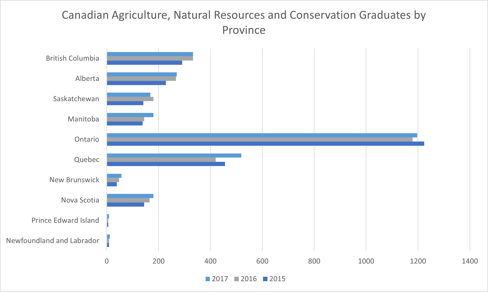

Statistical Data Analysis of Postsecondary Graduates from Canadian Universities
Harman Khehara
Canadian Graduates, Field of Study: Agriculture, Natural Resources, and Conservation

The average number of Canadian graudates in the field of agriculture, natural resources and conservation have
increased each year, specifically there has been a 2.8% change from 2015 to 2016 and a 6.32% change from 2016 to 2017. Out of all regions
in Canada, the middle 50% of the number of graduates lie between 85 to 317 graduates each year; both the low and high
values of this range are greater than both the years 2015 and 2016 demonstrating the increase in graduates from 2015 to 2017. The province of Quebec has seen a significant increase in number of graduates in 2017 when compared to both the years
2016 and 2017. The most number of graduates in this field come from Ontario and a low number of graduates are observed from Prince
Edward Island and Newfoundland and Labrador.
International Graduates, Field of Study: Agriculture, Natural Resources, and Conservation
The average number of International graudates in the field of agriculture, natural resources and conservation have
increased each year, specifically there has been a 12.8% change from 2015 to 2016 and a 6.8% change from 2016 to 2017. Out of all regions
in Canada, the middle 50% of the number of graduates lie between 15 to 60 graduates in 2017; the low value of 15 graduates is about 8 graduates
less compared to 2015 and high value of 60 graduates is about 5 graduates greater than 2015, but 6 graduates lower than 2016, demonstrating
a variablity in the change of number of graduates from 2015 to 2016.
Provinces such as British Columbia, Manitoba and Ontario have seen significant growth in the number of graduates from 2015 to 2017 while Quebec
and Alberta have seen a decrease in graduates from 2015 to 2017. A very low number of graduates are observed from New Brunswick, Prince Edward Island and
Newfoundland and Labrador.
Canadian Graduates, Field of Study: Mathematics, Computer and Information Sciences
Inernational Graduates, Field of Study: Mathematics, Computer and Information Sciences
Canadian Graduates, Field of Study: Architecture, Engineering and Related Technologies
International Graduates, Field of Study: Architecture, Engineering and Related Technologies